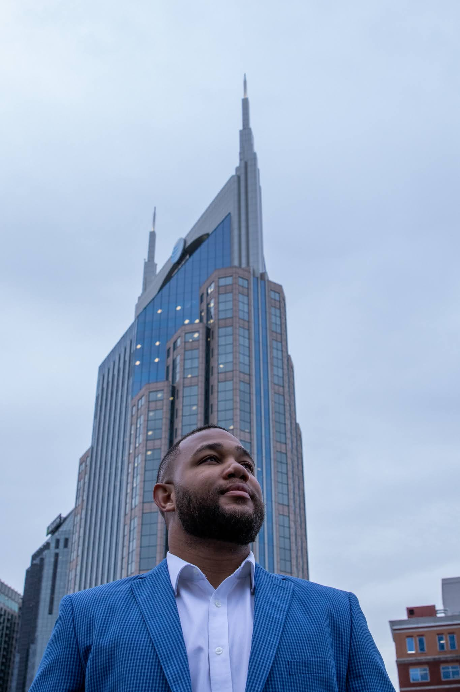

Our Mission
The Bank Defender was founded to stop the "Invisible Leak." Every day, local capital leaves community banks and flows to out-of-state giants. Our mission is to provide regional financial institutions with the Agentic AI "Sidecar" technology needed to identify leakage in real-time and incentivize members to keep their spending local. We don't just protect data; we defend the local economy.
Identify
Detect competitive card usage within your own transaction data.
Reclaim
Redirect interchange revenue back to the local institution.
Reinvest
Fund local growth through recovered capital and deeper loyalty.

The "Nexus" Vision
Based in Nashville, TN, The Bank Defender is led by a former Google Cloud Sales Manager with a vision to bring "Big Tech" defensive architecture to the local level. We believe that community banks are the nexus point for local creators and small businesses. Our infrastructure is built on the 2026 Google Financial Services Framework, ensuring that your bank stays at the cutting edge of security and community impact.
Request a 30-Day Revenue Diagnostic
Quantify your bank's interchange leakage and see the Revenue Recovery Map.